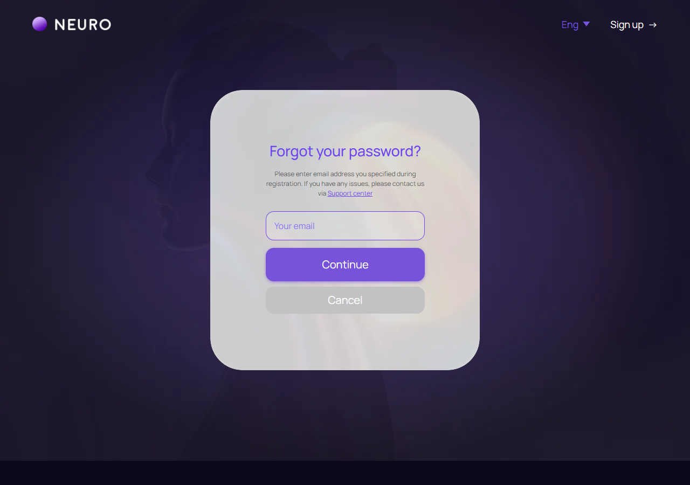
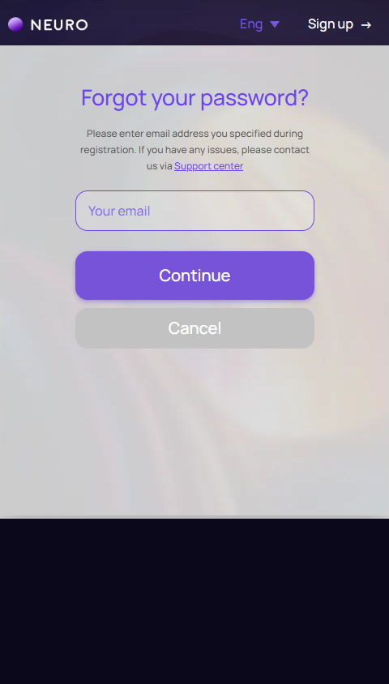

Восстановление доступа
forgot-password.html
Безопасно отправить ссылку восстановления.
| Когда открывается | Forgot password |
|---|---|
| Данные | Email; ограничение частоты; одноразовая ограниченная по времени ссылка. |
| Сценарий | Continue → одинаковое нейтральное подтверждение для существующего/несуществующего email; затем серверный поток сброса. |
| Переходы | Вход |
Общая и предметная логика. Снимки и подписи элементов — исходная редакция макета; поздние уточнения ТЗ имеют приоритет в своей области. Это не проверка текущего сайта.
Сопоставление с AskNebula
Существующие наблюдения 07–09.10.2026, без повторной проверки в этой передаче.
В справке описан путь восстановления через письмо; отдельный экран и его ошибки не наблюдались. Никакие письма не отправлены.
Состояние 1280 · 1280 × 900


Элементы и ожидаемые действия
| Элемент | Название в макете | Действие | Ожидаемый результат |
|---|---|---|---|
| E001 Скрыт в этом состоянии | forgot-burger | Декоративный элемент шапки auth в исходнике, помеченный как неактивный. | Не выдавать его за работающий вход/сохранение. Если меню/тема нужны при интеграции, связать с общей шапкой без изменения композиции. |
| E002 Виден | Home | Открыть адрес из исходника: home.html. | Сохранить авторизацию и переданный контекст. Backend-only маршрут связывает Игорь; открытие не выполняет денежное действие. |
| E003 Виден | Sign up | Открыть адрес из исходника: signup-create.html. | Сохранить авторизацию и переданный контекст. Backend-only маршрут связывает Игорь; открытие не выполняет денежное действие. |
| E004 Скрыт в этом состоянии | Декоративный элемент шапки auth в исходнике, помеченный как неактивный. | Не выдавать его за работающий вход/сохранение. Если меню/тема нужны при интеграции, связать с общей шапкой без изменения композиции. | |
| E005 Скрыт в этом состоянии | Декоративный элемент шапки auth в исходнике, помеченный как неактивный. | Не выдавать его за работающий вход/сохранение. Если меню/тема нужны при интеграции, связать с общей шапкой без изменения композиции. | |
| E006 Виден | Support center | Открыть адрес из исходника: https://24hours.support-nebula.com/hc/en-us. | Сохранить авторизацию и переданный контекст. Backend-only маршрут связывает Игорь; открытие не выполняет денежное действие. |
| E007 Виден | Your email | Ввести email; проверить формат, нормализацию и назначение адреса. | Неверный формат остается в форме. Подтверждение принадлежности отдельно от успешной доставки письма. |
| E008 Виден | Continue | Отправить запрос восстановления доступа. | Нейтральное подтверждение; ограничение частоты; одноразовая ссылка. |
| E009 Виден | Cancel | Открыть адрес из исходника: login.html. | Сохранить авторизацию и переданный контекст. Backend-only маршрут связывает Игорь; открытие не выполняет денежное действие. |
| E010 Скрыт в этом состоянии | auth-form-status | Информационный блок/область фокуса, не самостоятельная команда. | Показывать актуальные данные соответствующего сценария; фокус или чтение не выполняют мутацию. |
Состояние 390 · 480 × 844


Элементы и ожидаемые действия
| Элемент | Название в макете | Действие | Ожидаемый результат |
|---|---|---|---|
| E001 Скрыт в этом состоянии | forgot-burger | Декоративный элемент шапки auth в исходнике, помеченный как неактивный. | Не выдавать его за работающий вход/сохранение. Если меню/тема нужны при интеграции, связать с общей шапкой без изменения композиции. |
| E002 Виден | Home | Открыть адрес из исходника: home.html. | Сохранить авторизацию и переданный контекст. Backend-only маршрут связывает Игорь; открытие не выполняет денежное действие. |
| E003 Виден | Sign up | Открыть адрес из исходника: signup-create.html. | Сохранить авторизацию и переданный контекст. Backend-only маршрут связывает Игорь; открытие не выполняет денежное действие. |
| E004 Скрыт в этом состоянии | Декоративный элемент шапки auth в исходнике, помеченный как неактивный. | Не выдавать его за работающий вход/сохранение. Если меню/тема нужны при интеграции, связать с общей шапкой без изменения композиции. | |
| E005 Скрыт в этом состоянии | Декоративный элемент шапки auth в исходнике, помеченный как неактивный. | Не выдавать его за работающий вход/сохранение. Если меню/тема нужны при интеграции, связать с общей шапкой без изменения композиции. | |
| E006 Виден | Support center | Открыть адрес из исходника: https://24hours.support-nebula.com/hc/en-us. | Сохранить авторизацию и переданный контекст. Backend-only маршрут связывает Игорь; открытие не выполняет денежное действие. |
| E007 Виден | Your email | Ввести email; проверить формат, нормализацию и назначение адреса. | Неверный формат остается в форме. Подтверждение принадлежности отдельно от успешной доставки письма. |
| E008 Виден | Continue | Отправить запрос восстановления доступа. | Нейтральное подтверждение; ограничение частоты; одноразовая ссылка. |
| E009 Виден | Cancel | Открыть адрес из исходника: login.html. | Сохранить авторизацию и переданный контекст. Backend-only маршрут связывает Игорь; открытие не выполняет денежное действие. |
| E010 Скрыт в этом состоянии | auth-form-status | Информационный блок/область фокуса, не самостоятельная команда. | Показывать актуальные данные соответствующего сценария; фокус или чтение не выполняют мутацию. |